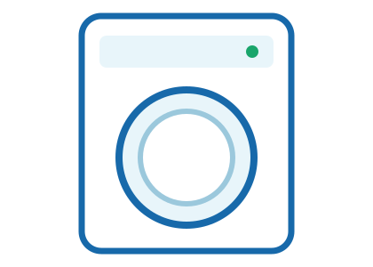

Not Spinning
A worn belt, faulty motor or carbon brushes, unbalanced load sensor or door-lock fault may stop the spin cycle.
Ask about this repair →Free visit & inspection. Repairs from ₹300. Technician at your door within 30 minutes during working hours. 30-day warranty.

A broken washing machine means piles of laundry and wasted time. Smart Home Service repairs front-load, top-load and semi-automatic washing machines across Mysore. The visit and inspection are free. Our team identifies the fault, explains it clearly and shares the price before any work begins.
No visiting charge. You pay only if you approve the repair.
Our technician inspects the appliance, explains the issue and shares a clear quote. Work starts only after you approve.
Talk to our teamTell us what your appliance is doing. Our team can help identify the next step.
A worn belt, faulty motor or carbon brushes, unbalanced load sensor or door-lock fault may stop the spin cycle.
Ask about this repair →A blocked drain-pump filter or kinked drain hose is a common cause. The pump may also need attention.
Ask about this repair →A faulty door lock, water left in the drum or PCB fault can keep the door locked.
Ask about this repair →Drum bearings, shock absorbers, suspension springs or loose counterweights can cause noise and vibration.
Ask about this repair →We read the code and check the sensor or control board associated with the fault.
Ask about this repair →Power supply, PCB, door switch or button-panel faults can stop the machine.
Ask about this repair →A blocked inlet filter, faulty inlet valve or water-level sensor issue can prevent filling.
Ask about this repair →A damaged door gasket, loose hose or cracked tub or pump seal can cause leaks.
Ask about this repair →Every visit starts with a free inspection. We confirm the scope and price before any work.
| Service | What's included | Price |
|---|---|---|
| Washing Machine Repair | Diagnosis and repair of spinning, draining, power, noise and leakage problems | From ₹300 |
| Drum, Bearing & Suspension Repair | Bearing, seal, shock absorber and spring repair or replacement | Quote after free inspection |
| Drain Pump & Motor Repair | Pump, motor, belt and carbon-brush repair or replacement | Quote after free inspection |
| PCB & Error Code Repair | Control-board testing and repair for supported models | Quote after free inspection |
| Inlet Valve & Sensor Repair | Water inlet valve, pressure switch and level sensor repair | Quote after free inspection |
| Service & Drum Cleaning | Drum descaling, filter cleaning and check-up; confirm availability | Price on request |
| Installation & Uninstallation | Safe disconnection, fitting and test wash | Price on request |
Prices marked “quote after free inspection” depend on the fault, model and parts required. Any unconfirmed service price is shown as “Price on request” rather than estimated.
Front-load, top-load fully automatic, semi-automatic and washer-dryer machines.
Smart Home Service is an independent multi-brand repair service and is not an authorised service centre of any brand.
Tell us the appliance issue and area.
Technician checks the appliance and shares a quote.
We proceed only after you agree.
We test the appliance and provide a bill.
Check that the water tap is open and the power switch is on.
Make sure the drain hose is not bent or blocked behind the machine.
Do not force a locked door open. Wait for the technician to drain the drum safely.
Note any display error code and share it on WhatsApp.
Our technicians cover these Mysore neighbourhoods. Call to confirm arrival time for your location.
Repairs start from ₹300. The visit and inspection are free. The final cost depends on the fault and any spare part required.
Possible causes include a worn belt, faulty motor or carbon brushes, an unbalanced load, a door-lock fault or a drain blockage.
A blocked filter, kinked drain hose or faulty drain pump may be responsible. The technician checks the cause.
Yes. The service brief lists front-load, top-load fully automatic and semi-automatic machines.
The source brief recommends service and drum cleaning about once every six months. In hard-water areas, descaling may help.
In most parts of Mysore, we aim to reach within 30 minutes during working hours. Call or WhatsApp to confirm.
Please confirm the exact part brand and compatibility with the technician before approving replacement.
The service brief specifies a 30-day warranty. Keep your bill and contact the team if the same issue returns.
Free visit and inspection, clear quote before work and a 30-day warranty.